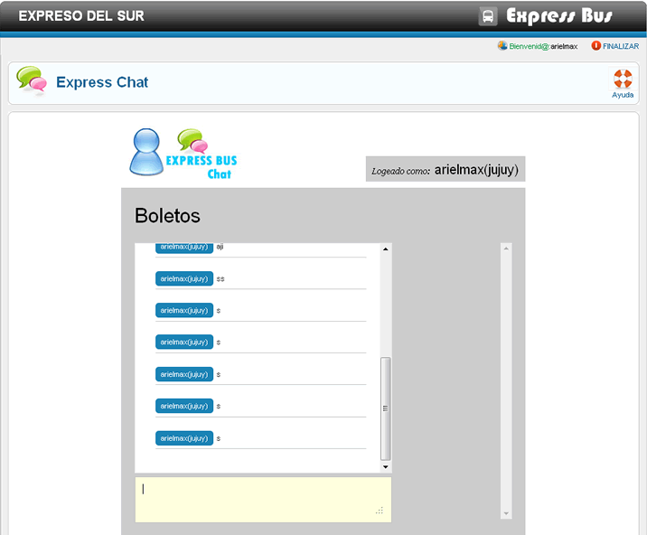

Ayuda Express Chat
En esta ventana del chat coloca tu mensaje en el cuadro de texto, para enviar solo presiona la tecla enter de tu teclado.
Puedes utilizar los emoticones colocandolos de la sigueinte manera: :), :D, :p
Si no no se actualiza los mensajes y no puedes visualizarlos solo actualiza tu navegadro o presion F5.
Recuerda que si ya no usaras el chat es importante Finalizar.